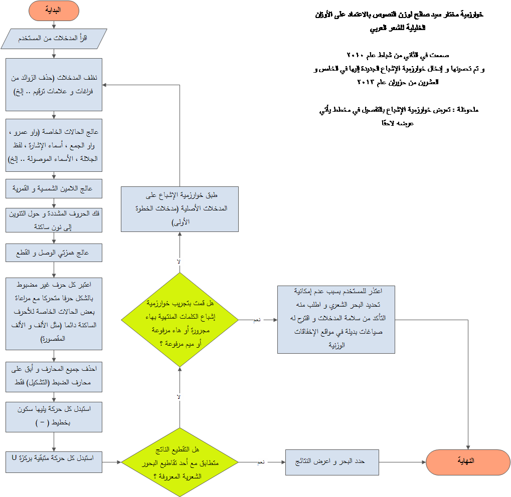
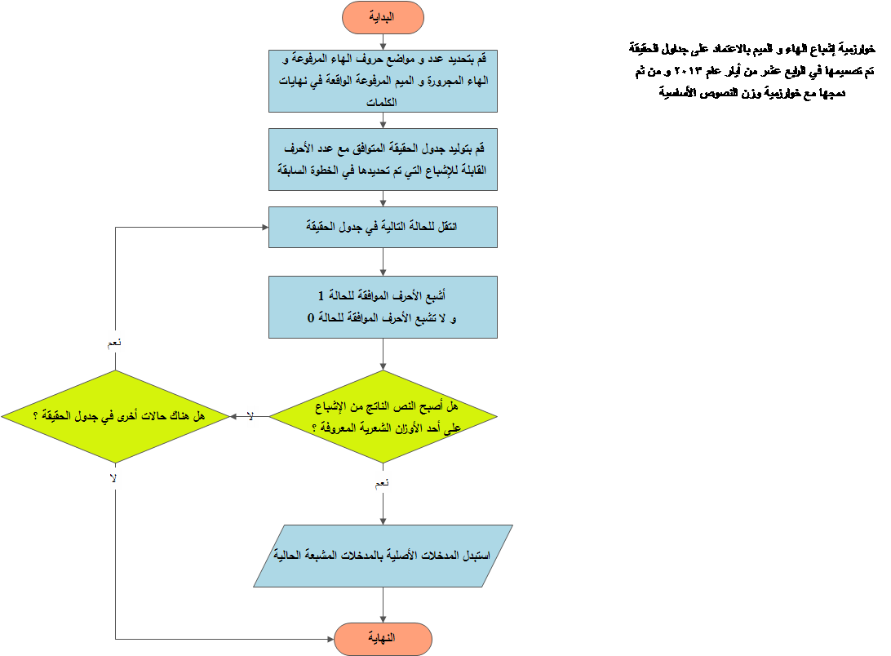
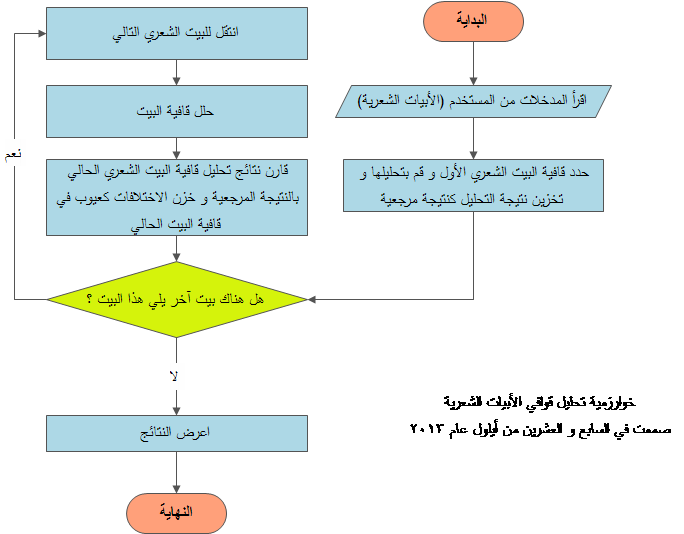

- مختار سيّد صالح أوّلاً في جائزة سعاد الصباح للإبداع الفكري و الأدبيّ عن ديوانه "هو الآن يعبر منحدرات الأغاني"14/03/2017
- نشر شيفرة المشروع مفتوحة المصدر دعماً للمحتوى العربي و صدقةً جارية بإذن الله ..25/05/2016
- زيادة سرعة الاستجابة 1000% بعد الانتقال إلى مجموعة المخدمات السحابية الجديدة إضافة لتحسين الخوارزميات.25/05/2016
- إضافة تحسينات عديدة على الخوارزميّات لتسريع أداء ميزان القصيدة.09/02/2015
- إضافة شرحين مرئيّين جديدين لاستخدام ميزان القصيدة و معالج كتابة القصيدة إلى صفحة دليل الاستخدام06/01/2015
- إضافة مبرمج الفراهيدي إلى الطبعة الثالثة من معجم البابطين للشعراء العرب المعاصرين في الكويت.03/05/2014
- إضافة تطويرات جديدة على آلية عمل معالج كتابة القصيدة.16/04/2014
- موقع اللغة والثقافة العربية الرسمي في فرنسا يتحدّث في أخباره عن مشروع الفراهيدي.02/04/2014
- إضافة تحسينات عديدة إلى دوال التقطيع الوزنيّ في ميزان القصيدة و معالج كتابة القصيدة.02/04/2014
- وصول عدد طلبات التقطيع الوزنيّ المقدّمة لمشروع الفراهيدي منذ إطلاقه إلى مائتي ألف طلب.25/03/2014
- إضافة ميزة مشاركة نتائج التقطيع الوزنيّ عبر شبكة الفيس بوك إلى ميزان القصيدة.18/03/2014
- إطلاق منجز، منصة العمل الحر للناطقين باللغة العربية على العنوان https://t.co/0UqL494hBK16/03/2020
الشيفرة المصدريّة لمشروع الفراهيدي
عزيزي المطوِّر مرحباً بك في صفحة تحميل الشيفرة المصدريّة لمشروع الفراهيدي , أرجو أن تتكرّم بقراءة الأسطر التالية بعناية قبل تحميل الشيفرة المصدريّة
ماهي مبررات كتابة مشروع الفراهيدي أصلاً ؟
لأنَّ النجاح في تقديم بحث علميّ عن "حوسبة العَروض و القافية" مع تطبيق عملي له سيساهم يقيناً في تقديم أبحاث جديدة في المستقبل بتطبيقات أوسع و أبعد من التطبيقات الأدبيّة المباشرة نذكر منها على سبيل المثال لا الحصر (تطبيقات القارئ الآلي للنصوص العربيّة – تطبيقات تمييز الأصوات باللغة العربيّة – تطبيقات التحكّم الآلي باستخدام الأوامر الصوتيّة باللغة العربيّة - تطبيقات التشكيل التلقائي للنص العربي – تطبيقات المحللات الصرفية ... و غير ذلك من التطبيقات المعتمدة في عملها على قواعد تحويل النص المكتوب إلى الصوت المنطوق المقابل له و العكس).
حسناً , و كيف أساهم في ذلك كمطوِّر عربيّ ؟
مشروع الفراهيدي و عملي الطويل فيه هو اجتهاد شخصيّ أضعه بين يديك لتستفيد منه أو لتبني عليه أو لتستلهم منه , لا فرق , المهم أن يكون هذا العمل الذي أنشره بشكلّ مجانيّ تطوّعيّ بذرة لشيء قادم يخدم حوسبة لغتنا العربيّة الخالدة و هذه مسؤوليّتك أنت و مسؤوليّتي أنا و مسؤوليّة كلّ من يمتلك المعرفة التقنيّة و اللغويّة تجاه لغة القرآن الكريم.
كيف يعمل الفراهيدي داخليّاً ؟
يعمل الفراهيدي وفق خوارزميّات ثلاث جديدة و مبتكرة أضع مخطّطاتها التدفّقيّة بين يديك:
أوّلاً - خوارزميّة التقطيع الوزنيّ (ميزان القصيدة):
ثانياً - خوارزميّة الإشباع الجديدة:
ثالثاً - خوارزميّة تحليل القافية:
خطوات تشغيل الفراهيدي على السيرفر الشخصي بعد تحميله
بعد تحميل الشيفرة المصدريّة لمشروع الفراهيدي نقوم بعمل الخطوات التالية:
- تثبيت سيرفر php و mysql , و عن نفسي أنصح بسيرفر WAMP.
- عمل import لقاعدة البيانات الخاصة بالمشروع و الموجودة في الملف localhost.sql في مجلّد database بعد فك ضغط المشروع.
- تغيير إعدادات الاتصال بقاعدة البيانات في الملف application\config\database.php في الأسطر 51 و 52 و 53 و 54.
- نسخ المجلّد faraheedy إلى مسار الـ www في سيرفر wamp.
- البدء بالعمل.
بنية الملفات البرمجية
الفراهيدي مكتوب بالاعتماد على إطار عمل Codeigniter مفتوح المصدر و لذا فإنّ معظم الملفات الموجودة في الشيفرة المصدريّة قد تبدو غريبة و كثيرة لمن لا يعرف CodeIgniter و لتلافي حصول هذا اللبس سأسرد هنا قائمة بأهمّ الملفات البرمجيّة الخاصة بالفراهيدي.
- application/models/core.php (كلاس التقطيع الوزنيّ).
- application/models/du2alee.php (كلاس التشكيل التلقائي).
- application/controllers/*.php (كلاسات المتحكّمات الخاصة بالمشروع) - من لم تتّضح له الفكرة فالأفضل أن يقرأ عن مفهوم MVC.
- application/views/*.php (صفحات الـ HTML التي تمثّل واجهة استخدام المشروع) - من لم تتّضح له الفكرة فالأفضل أن يقرأ عن مفهوم MVC.
- assets/js/mezanjs.js - جافا سكربت ميزان القصيدة.
- assets/js/wizardjs.js - جافا سكربت معالج كتابة قصيدة.
تحميل شيفرة الفراهيدي
| الشيفرة المصدرية |
 |